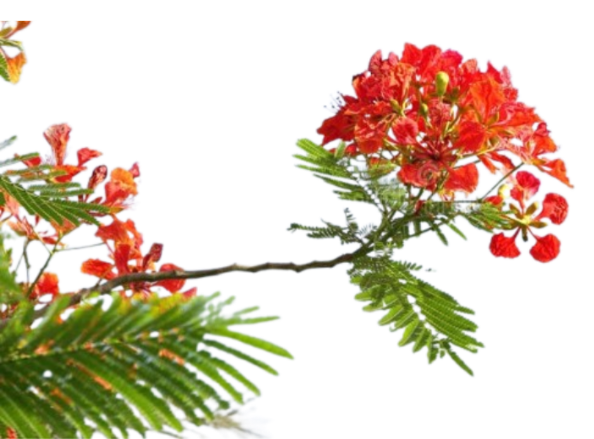
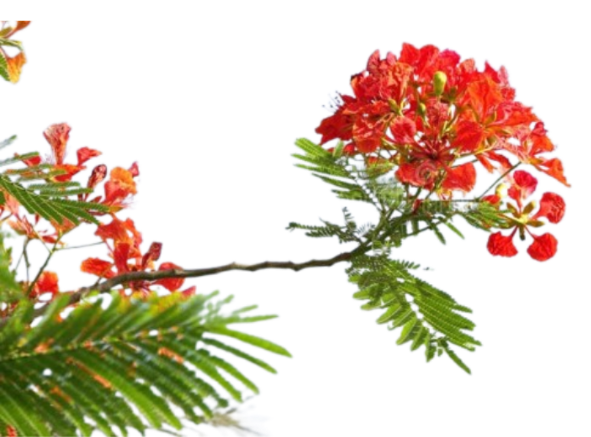

Common Names: Flamboyant Tree, Royal Poinciana, Flame of the Forest, Gul Mohr (Urdu)
Scientific Name: Delonix Regia
Suggested Uses: Street Trees, Shade Trees
Where to See: Public Parks, Private Residences
 

Flamboyant is perhaps the best adjective for the tree. Flamboyant indeed, the Gul Mohr is a medium sized tree with arresting red flowers which you’ll see popularly planted in parks, private gardens, and occasionally along median islands. Gul Mohr trees are distinctly found within Karachi in Pakistan as they are less successful in the more intense winters away from the coastal city.
The Gul Mohr grows to about 35 feet tall with a 40 or so foot expanse. Its trunk is slender, beige, and distinctly smooth. Very healthy trees have an intense green canopy, marked with lime green highlights. Older trees may develop buttress roots which stabilise the tree.
Gul Mohr flowers come largely in yellow, orange, and red with the later two being the most common. The trees bloom from April onwards and some continue until even mid December. The most striking flowering period is in April and May and while flowering may continue for a few months thereafter, it isn’t particularly notable otherwise. The flowers are large and have 5 petals with a distinct white streak running down the third petal.
Don’t let the name deceive you into thinking it’s a local species however. These tropical trees from Madagascar were introduced to the subcontinent centuries ago and have been popularly planted for beautification purposes. Gul Mohrs have found themselves home in a myriad of tropical and subtropical regions from India and Pakistan all the way to the Florida Keys!